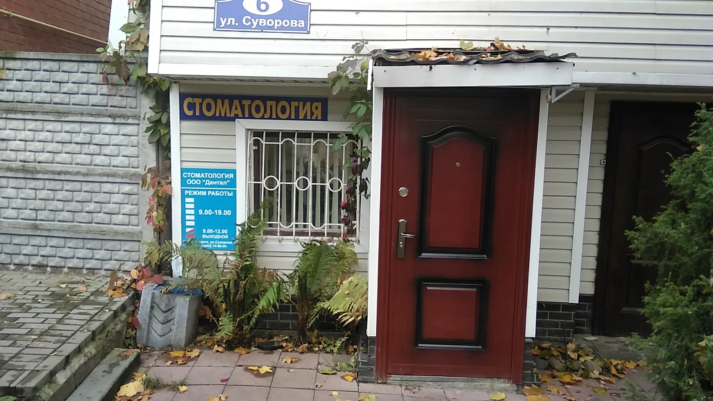
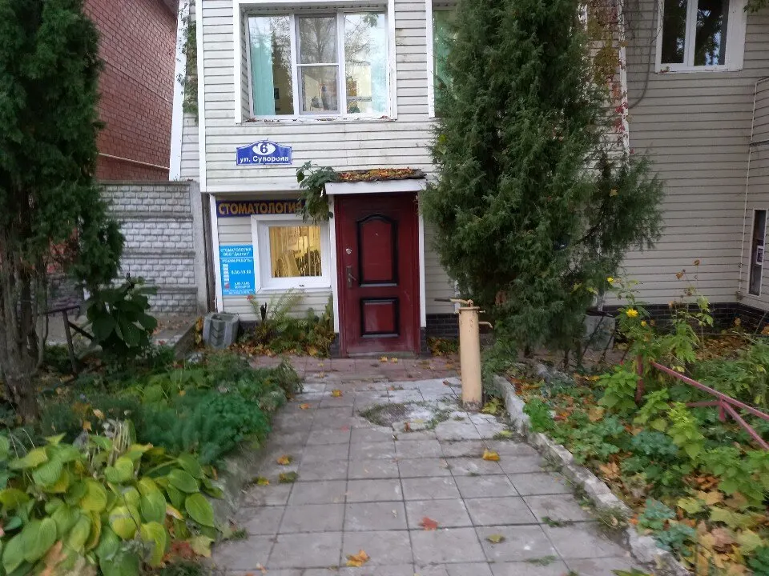
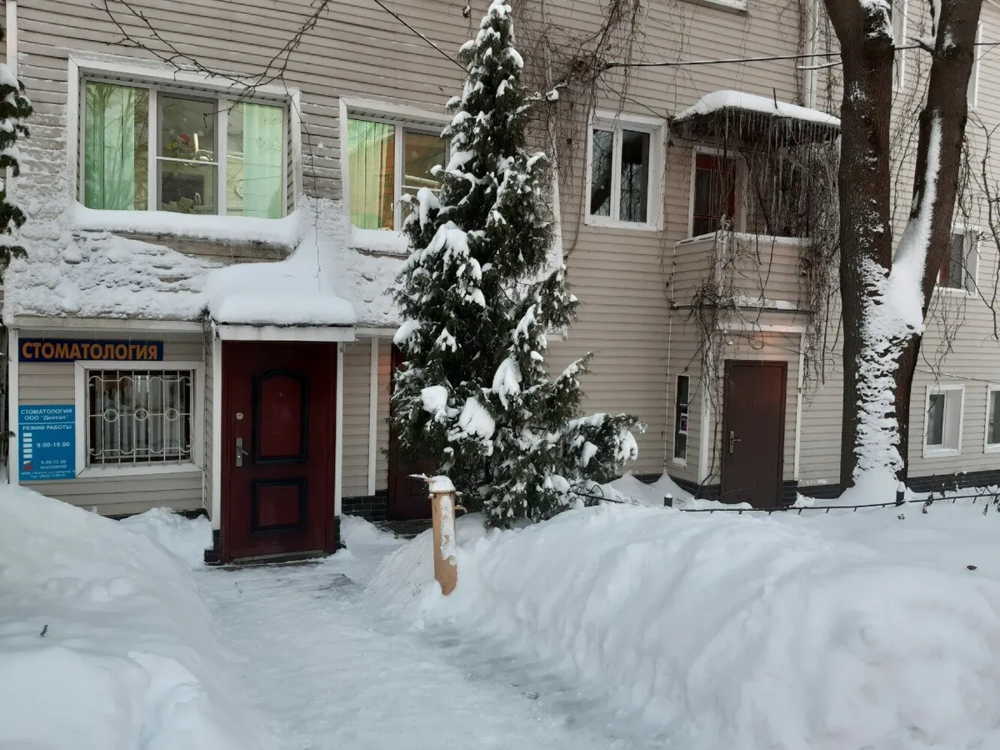
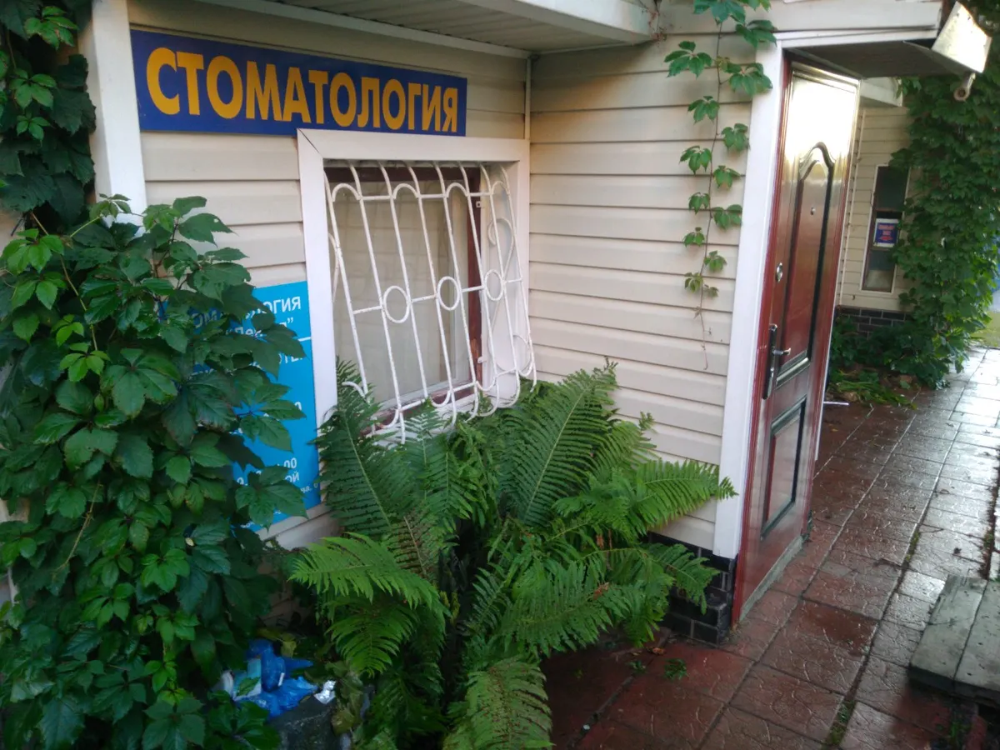

Стоматология · лечение и протезирование · ул. Суворова, 6
Стоматология в Калуге: лечение и протезирование в центре города
Лечение зубов и протезирование: коронки, мосты. Приём по будням с 9:00 до 18:00, запись по телефону.
- Пн–Пт 9:00–18:00, Сб и Вс выходной
- Центр Калуги, ул. Суворова, 6
- Лечение зубов, коронки и мосты

Услуги и цены
Цены на карточке клиники не указаны: стоимость уточняйте при записи.
Лечение зубов
- Лечение зуба (терапия)уточнить
- Пломбауточнить
Протезирование
- Консультация по протезированиюуточнить
- Коронкауточнить
- Несъёмный мостуточнить
Нужной услуги нет в списке? Позвоните и спросите до приезда.
Как попасть на приём
- 01
Позвоните
+7 (910) 527-00-45, по будням с 9:00 до 18:00. Скажите, что беспокоит: лечение зуба или протезирование.
- 02
Найдите вход
Дом 6 на улице Суворова. Вход с вывеской «Стоматология»: красная дверь под козырьком.
- 03
Приём
Врач осмотрит зуб и скажет, что нужно сделать.



За что хвалят в отзывах
Цены
«Ценник невысокий по отношению к большинству клиник города» – пишет клиент. Про приемлемые цены в отзывах пишут часто.
Семьями
«Ходим сюда всей семьей» – пишет клиентка. Ей вторит другая: «Всей семьей только к ним!»
Годами
«Более 15 лет наблюдаюсь и лечусь» – пишет клиент. «Много лет пользуемся услугами этой клиники» – пишут другие.
В центре города
«Удобное местоположение» – пишут клиенты. Рядом остановка «Больница скорой помощи», 350 м по данным Яндекс Карт.
Отзывы с Яндекс.Карт
«Здравствуйте. Более 15 лет наблюдаюсь и лечусь. Всё нравится, менять не собираюсь.»
Роман Романов · 7 марта 2025
«Лечу зубы там уже несколько лет. Отличное качество лечения и материалов и при этом на редкость низкие (сравнительно) цены: вообще неожиданно высокий уровень лечения за такие деньги.»
Фёдор Смалько · 6 августа 2023
«Много лет пользуемся услугами этой клиники. Нареканий нет, претензий не имеем. Всё хорошо»
Марина Воронина · 11 апреля
Отзывы с карточки на Яндекс.Картах, без правок.
Частые вопросы
Как записаться?
Позвоните по телефону +7 (910) 527-00-45 в будни с 9:00 до 18:00 и скажите, на что хотите записаться.
Где находится клиника?
Калуга, ул. Суворова, 6. Вход с вывеской «Стоматология»: красная дверь под козырьком. Рядом остановка «Больница скорой помощи», 350 м по данным Яндекс Карт.
Какие услуги?
На карточке клиники указаны терапия и протезирование: лечение зубов, коронки, мосты. Нужна другая услуга – спросите по телефону до приезда.
Сколько стоит лечение?
Цены на карточке клиники не указаны, стоимость уточняйте при записи. В отзывах на Картах про цены пишут «приемлемые» и «невысокие».
Работаете в выходные?
Суббота и воскресенье – выходные. Приём по будням с 9:00 до 18:00.
Позвоните и запишитесь на приём
- Адрес
- ул. Суворова, 6, Калуга
- Часы
- Пн–Пт 9:00–18:00, Сб и Вс выходной
- Телефон
- +7 (910) 527-00-45